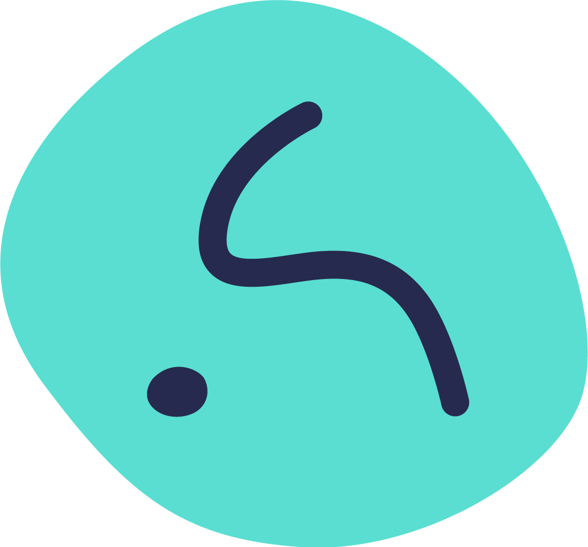

This logo is createed with a skewed letter that indicates a combination of A and S, the initial letters of my first and last name. My personal brand attributes include Reliable, Fresh, Friendly, and Calm. The rounded curve and the cobblestone-shaped background appropriately expresses the attributes of Friendly. The Turquoise, signifying Fresh, contrasts itself greatly with the Starry Night Blue that generates a calm and reliable feeling.
| Attributes | Logo |
|---|---|
Full Color LogoThis is the primary logo to be used on social media with light backgrounds. Color Hex Codes
Background: Turquoise #5ADED1 |
 |
Black & White LogoThis is the logo to be used on media with color or printing restrictions. Color Hex Codes
Background: Black #000000 |
|
Reverse Black & White LogoThis is the logo to be used on media with color or printing restrictions. Color Hex Codes
Background: White #FFFFFF |
|
FaviconThis is a full color icon used for website tabs, and the size will be 24x24 px. |